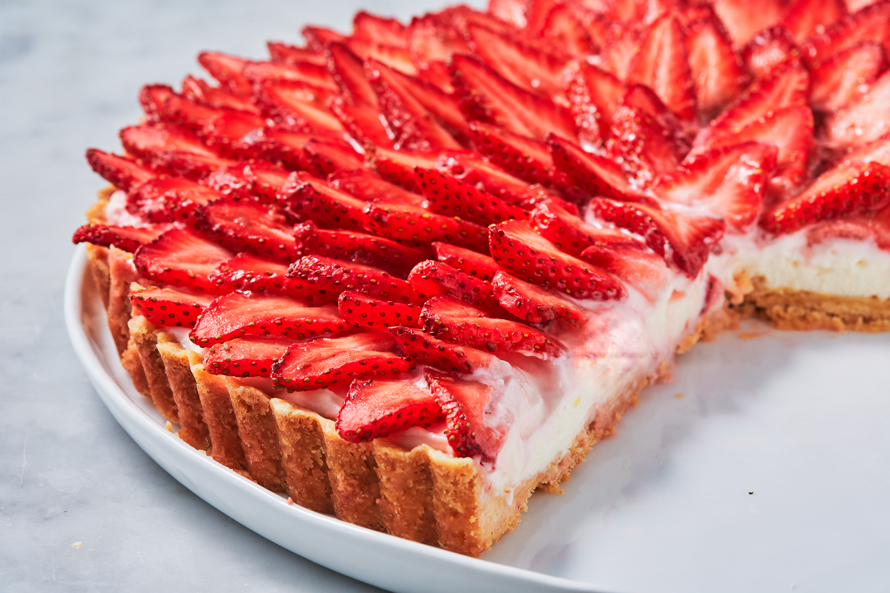

Strawberry Tart
Celebrate the end of summer with this bright and sweet dessert.

Ingredients
Crust:
- 1 1/3 cup all-purpose flour
- 1/4 cup granulated sugar
- 1/2 teasponn kosher salt
- 10 tablespoon butter, melted
Filling:
- 1/2 cup heavy cream
- 2 (8 oz.) blocks cream cheese, softened
- 1/2 cups granulated sugar
- Juice and zest of 1 lemon
- 1 teaspoon pure vanilla extract
Topping:
- 1 1/2 lb. strawberies, hulled and sliced
- 3 tablespoons strawberry or raspberry preserves
Directions
- Make crust: Preheat oven to 350°. In a large bowl, whisk together flour, sugar, and salt. Add melted butter and stir until dough forms. Press mixture into a 10" or 11" tart pan with a removable bottom, pressing until dough is smooth. Prick all over with a fork and bake until golden, 25 to 30 minutes. Let cool completely.
- Meanwhile, make filling: In a large bowl using a hand mixer, beat heavy cream until stiff peaks form, 7 minutes. In another large bowl, beat together cream cheese and sugar until smooth. Add lemon juice and zest, and vanilla. Beat until combined. Fold in whipped cream, then spoon into cooled crust and smooth top.
- Starting on the outside, arrange strawberries on top of tart in a circle until entire tart is covered.
- In a small microwave-safe bowl, heat together preserves and 2 teaspoons water until warmed, 30 seconds. Brush over tart and refrigerate until well chilled, 2 hours.